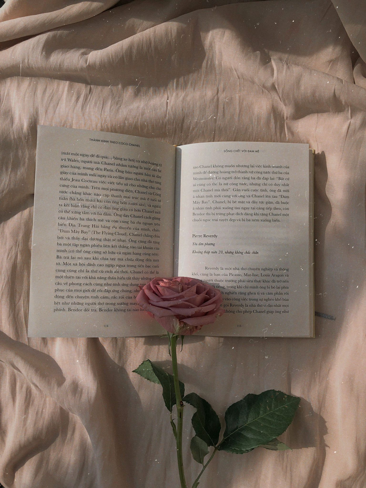

Over mij
Welkom bij mijn website

Welkom op mijn informaticawebsite! Voor deze opdracht heb ik verschillende onderwerpen binnen de informatica behandeld, zoals kleurmodellen, het binaire stelsel, bitmap- en vectorafbeeldingen, en compressie.
Ik ben Chaimae, 15 jaar en vwo 5-leerling aan het Vlietland College. Thuis woon ik met mijn ouders en twee jongere broers en zussen. Ik volg een gemengd profiel met vakken uit Natuur & Gezondheid en Natuur & Techniek. Na de middelbare school wil ik geneeskunde of tandheelkunde studeren, beide met een numerus fixus, wat me dwingt goed na te denken over een derde studiekeuze.
Naast mijn interesse in de medische wereld ben ik gefascineerd door interdisciplinaire studies, zoals in Utrecht of Rotterdam, die verschillende vakgebieden combineren. Hoewel ik nu niet van plan ben om in Leiden te studeren, sta ik open voor verschillende opties en wil ik de tijd nemen om alles te verkennen.
Mijn klasgenoten raden aan om bij mijn derde studiekeuze rekening te houden met mijn schrijfvaardigheden. Ik ben goed in het schrijven van lange verslagen en het lijkt me leuk om daar later mijn werk van te maken, misschien door medische artikelen te schrijven.
Daarnaast heb ik meer doelen in het leven dan alleen studeren en een leuke baan vinden. Ik wil ook bijdragen aan de maatschappij, wat voor mij belangrijk is bij het solliciteren.
Door te werken in de gezondheidszorg hoop ik mensen te helpen, maar ik wil ook tijd vinden om mijn interesse in rechten te verkennen en daar een bijdrage aan te leveren. Ik wil niet alleen fysiek helpen, maar ook opkomen voor de rechten en belangen van anderen, vooral in onderontwikkelde gebieden. De verhalen van zorgverleners die daar een verschil maken, hebben me zo geïnspireerd dat ze mijn levensmotto zijn geworden: een ‘compleet’ zorgverlener zijn.
Ik zoek een derde studie die zowel medische als juridische elementen behandelt, omdat ik maatschappelijke impact wil maken. Mijn dromen gaan verder dan alleen studeren en een goede baan; ik wil iets betekenen voor de maatschappij en een positieve impact creëren.
Naast school werk ik als vulploegmedewerker bij de Hoogvliet. Het is fijn om met vrienden te werken, wat het werk veel leuker maakt.

In mijn vrije tijd lees ik graag, met een voorkeur voor biografieën, waargebeurde verhalen, oorlogsliteratuur en thrillers. Mijn passie voor lezen is altijd belangrijk voor me geweest, ook al merk ik dat school soms het lezen zelf probeert aan te dringen. Daarom kies ik boeken die horen bij mijn favoriete genres. Ik hou er ook van om series en films te binge streamen.
Daarnaast houd ik ook van kalligraferen en doe ik dat al een tijdje. Als ik me verveel is het eerste waar ik naar grijp ook gelijk mijn stiften en zoek ik een leuke quote op Pinterest die ik kan overnemen op mijn blad. Ik probeer ook regelmatig nieuwe kalligrafiestijlen te leren of andere creatieve hobby’s te vinden.
Ik houd ook van het leren van nieuwe dingen en deze opdracht en het vak informatica zijn daar een goed voorbeeld van. Ik vind het erg interessant om te leren coderen, te experimenteren en creatief bezig te zijn met deze website, dus ga ik jullie ook de gelegenheid geven meer van de website te verkennen. Klik op de kopjes van bovenstaand menu om meer te weten te komen over allerlei informatica onderwerpen.